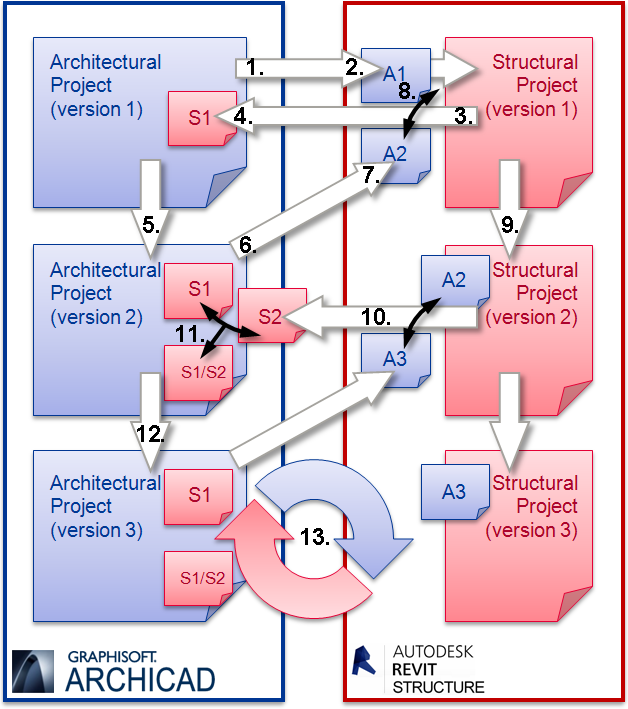
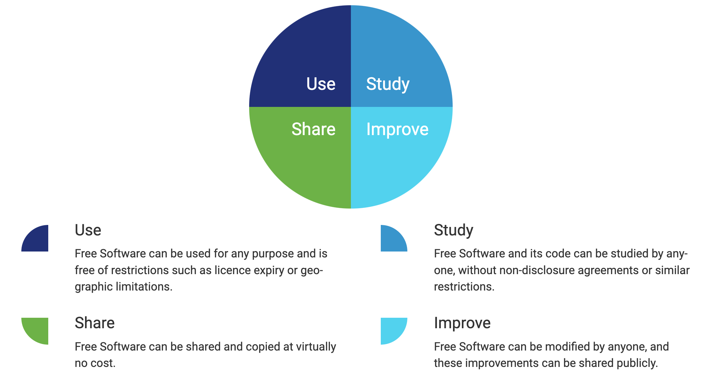
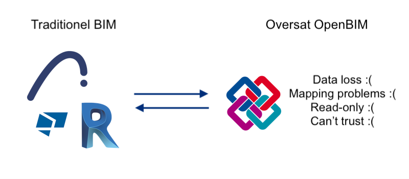
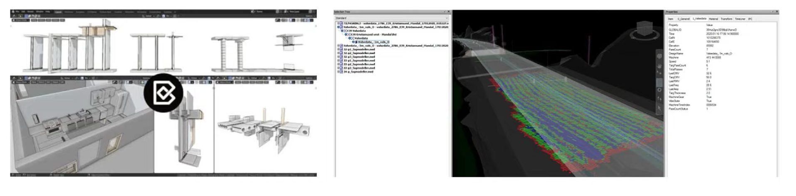
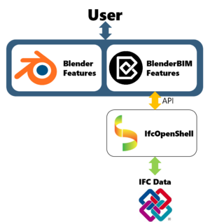

F23 - 41927
Intro til Native IFC og Blender BIM
Martina Jakubowska
Inspireret af "Introduction to OpenBIM, Native IFC, and Open Source AEC", Dion MoultHvad er problemet?
BIM data er rigtig ustruktureret.
BIM data er rigtig ustruktureret.
➡ Revit væg data model ≠ ArchiCAD væg data model
➡ Overførsel af data mellem programmerne afhænger af "oversættelse".

GRAPHISOFT | ArchiCAD 18 Help
BIM data er rigtig ustruktureret.
➡ Revit væg data model ≠ ArchiCAD væg data model
➡ Overførsel af data mellem programmerne afhænger af "oversættelse".
➡ Det går ud over data kvaliteten.
➡ Meget tid bliver brugt på at diskutere hvilken væg "definition" er bedst.
➡ Nuværende BIM er derfor ofte ikke bedre end et regneark...
BIM data er rigtig ustruktureret.
Med et regneark vil alle i det mindste:
➡ Have adgang til den
➡ Kunne se og læse hvordan f.eks. en væg er defineret.
➡ Definere og udvide data strukturen efter behov.
➡ Tilkoble tredjepartsprogrammer, skrive scripts, udvide og forbedre det.
➡ Et regneark udløber ikke og kræver ikke licenser.
Løsning: Åbne data standarder.
Løsning: Åbne data standarder.
An open data standard is a set of specifications (or requirements) for how some sets of data should be made publicly available. [...]
Open data standards are generally developed “in the open”, meaning that anyone who is interested has a way to contribute.
OPEN DATA DIRECTORY (datastandards.directory/glossary), data.europa.eu
Løsning: Åbne data standarder.
Tre hovedtyper af åbne data standarder:- Schematic: Defines structure of the data to be published. This includes the names, descriptions, and data types of data fields or columns.
- Semantic: defines the terminology or language in the data which is published. E.g. define the terms "Arson" and "Robbery"
- Atomic: defines how basic elements of data must be represented. E.g., a date and time should be formatted as “2017-01-01T13:00:00Z” OPEN DATA DIRECTORY (datastandards.directory/glossary)
Åbne data standarder andvendt i BIM → Open BIM.
Eksempler på Open BIM standarder
- IFC (Industry Foundation Classes)
- BCF (BIM Collaboration Format)
- IDS (Information Delivery Specification)
- MicroMVD (Micro Model View Definition)
- BSDD (buildingSMART Data Dictionary)
- COBie (Construction-Operations Building information exchange)
- BrickSchema
- BHoM
- dotbim
- GbXML
- ...
IFC is a standardized, digital description of the built environment. It is an open, international standard (ISO 16739-1:2018), meant to be vendor-neutral, or agnostic, and usable across a wide range of hardware devices, software platforms, and interfaces for many different use cases.
OpenSource is about freedom of users.
The four freedoms of free software*
 Free Software Foundation Europe (fsfe.org/freesoftware/freesoftware.en.html)* Obs! Fri software har ikke noget at gøre med pris!
Oversat OpenBIM vs Native OpenBIM
Oversat OpenBIM giver stadig mange af de samme problemer...
Native OpenBIM


Blender BIM
- Aug 2019: 83 lines of code written to export Blender meshes to IFC
- Oct 2019: Packaged and released to public
- Jan 2020: Community user automates visualisation of compactor machines
- Nov 2020: Swiss army knife of free BIM utilities in production use on commercial projects
Blender BIM
I Blender:
❏ Forskellige vinduer og panels (interface)
❏ Sæt custom layout og gem den
❏ Emulate Numpad
❏ Basis shortcuts: G (GX, GY, GX), R (RX, RY, RZ), S (SX, SY, SZ),
shift-RMB, sæt View, shift-D, alt-Z
Obs! Hotkeys er kontekstsensitive!
❏ Snap Menu
❏ Object Mode/Edit Mode
I BlenderBIM:
❏ Interface: Outline, Scene Properties, Object Properties, Material Properties, N-panel
❏ Forskel på blender fil (.blend) og IFC fil (.ifc)
❏ BlenderBIM modelling shortcuts: shift-A, shift-E...
❏ Tooltips og links til online IFC dokumentation
❏ Ifc Search
BlenderBIM Demo:
❏ Blender Mesh til IFC element (væg)
❏ Property Sets og Quantity Sets
❏ IfcGrid
❏ Custom Types
❏ Custom profiles
❏ IfcArray
❏ IfcBuildingStoreys